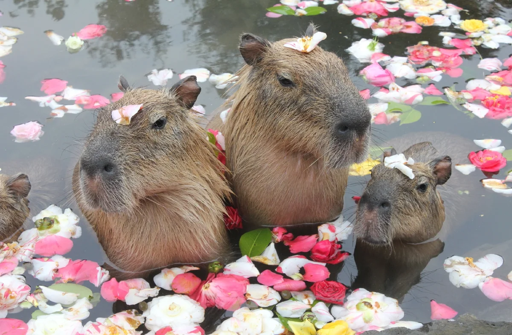

Ведёт полуводный образ жизни; от воды редко удаляется более чем на 500—1000 м[5]. Её распространение связано с сезонными колебаниями уровня воды — во время сезона дождей капибары рассеиваются по территории, в сухой сезон скапливаются по берегам крупных рек и других постоянных водоёмов и зачастую проходят в поисках воды и пищи значительные расстояния. Эти грызуны обычно активны днём, но если их часто беспокоят люди и хищники, то переходят на ночной образ жизни.Капибара в воде. Капибара прекрасно плавает и ныряет; высокое расположение на голове глаз, ушей и ноздрей позволяет ей при плавании держать их над водой.
